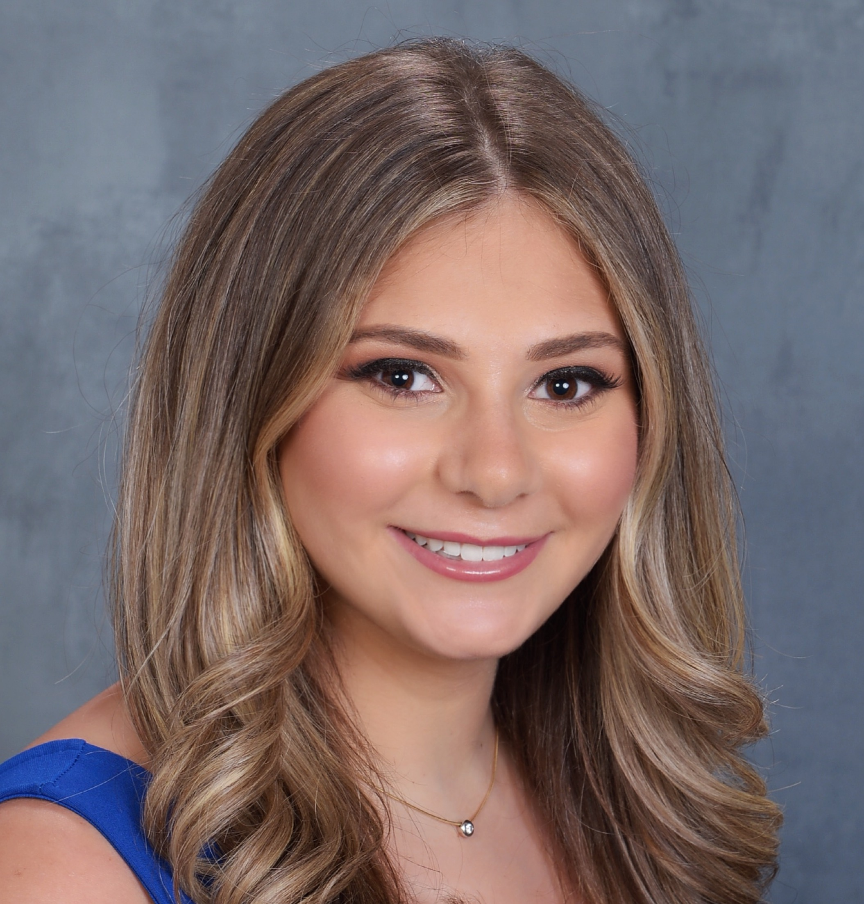

Delaney Engel
- (+1) 732-614-6039
- delaneycarenengel@gmail.com
- Linkedin
I am a junior at UMD
Education
- University of Maryland, College Park; Philip Merrill College of Journalism
- May 2023 Anticipated Graduation
- Bachelor of Arts, Major: Journalism/ Communications | Minor: History |
- Concentration: Public Relations & Social Media
- GPA: 3.8
Experience
- Universal Music Group (Internship) - Tel Aviv, Israel June 2021- August 2021
- Worked directly with UMG’s Artists and Repertoire (A&R) Team:
- Collaborated with artists, producers, and music professionals to aid in the artistic development process.
- Worked directly with Producers Jon Levine and Ido B Zooki
- Worked directly with Alex Clare and Gali Givon
- Attended various studio, recording, and mixing sessions
- Offered insight on how Israeli music would thrive within the American demographic of ages 18-24
- Attended live events to seek and evaluate talent throughout Tel Aviv
- Worked directly with UMG’s Public Relations Team:
- Captured “behind the scenes” footage of recording, mixing, and studio sessions for promotional use
- Assisted with the introduction of Tik Tok to UMG Israel
- Formulated spreadsheets and compiled research of notable dates and artists under UMG to accordingly created social media content
- Example: June 25th = Global Beatles Day
- Assisted with commercial photo shoots directed by Shai Franco
- Worked directly with UMG’s Marketing Managers:
- Curated mood boards to aid the design team in creating albums for artists.
- Allocated data from Spotify and SoundCloud streams, downloads, and listeners to evaluate how artists are performing within niche oriented markets.
- Assisted in the design process of album covers, merchandise and the overall brand establishment of Gali Givon.
- The Left Bench September 2019-Present
- Blog Writer and Reporter
- On scene sports reporting
- Created and produced social media highlight packages
- Assisted in the on-campus studio
- Her Campus January 2021-Present
- Content Creator and Writer
- Creates original content for social media outlets
- Writes lifestyle articles and stories for publication
- WMUC Radio Show September 2019-Present
- Radio Show Host
- Anchor of Drop The Pop Radio Show
- On-air conversations relating to all topics of entertainment and pop culture
- Assisted in weekly live broadcasted radio show in the on-campus studio
Leadership and Extracurricular Activities
- Phi Sigma Sigma Sorority 2019-Present
- Social Chair
- Event planning for Phi Sigma Sigma- Beta Alpha Chapter
- Works closely with Phi Sigma Sigma National Board
- Ten Women & Ten Men Plan
- Promoting an understanding of power based personal violence to the Maryland Greek Community.
Skills
- Computer Skills: Fluent in Microsoft Office (Word, Excel, PowerPoint), Google Softwares (Docs, Slides, Drive, Sheets), Adobe Suite (Photoshop, LightRoom, Bridge, Premiere Pro, After Effects)
- Writing Skills: Trained in AP Style
- Social Media Platforms: Facebook, Twitter, Snapchat, Instagram, Tik Tok
- Social Media Skills: Content Writing, Video/Photo Editing, Blogging, Creative Thinking, Marketing
- Computer Language Proficiencies: HTML, CSS, Java Script
- Personal Skills: Hardworker, Devoted, “Outside the Box” Thinker, Outgoing, Strong Communication and Problem-Solving Skills
